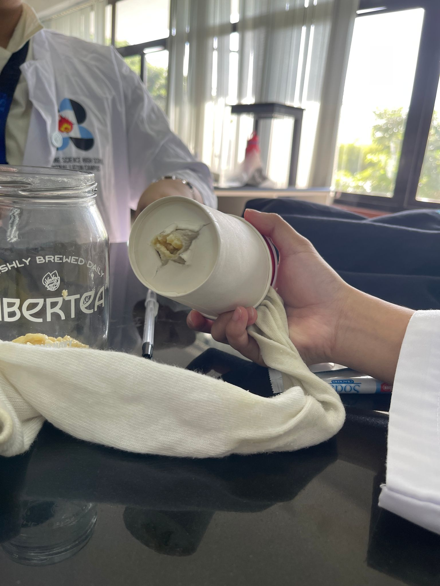
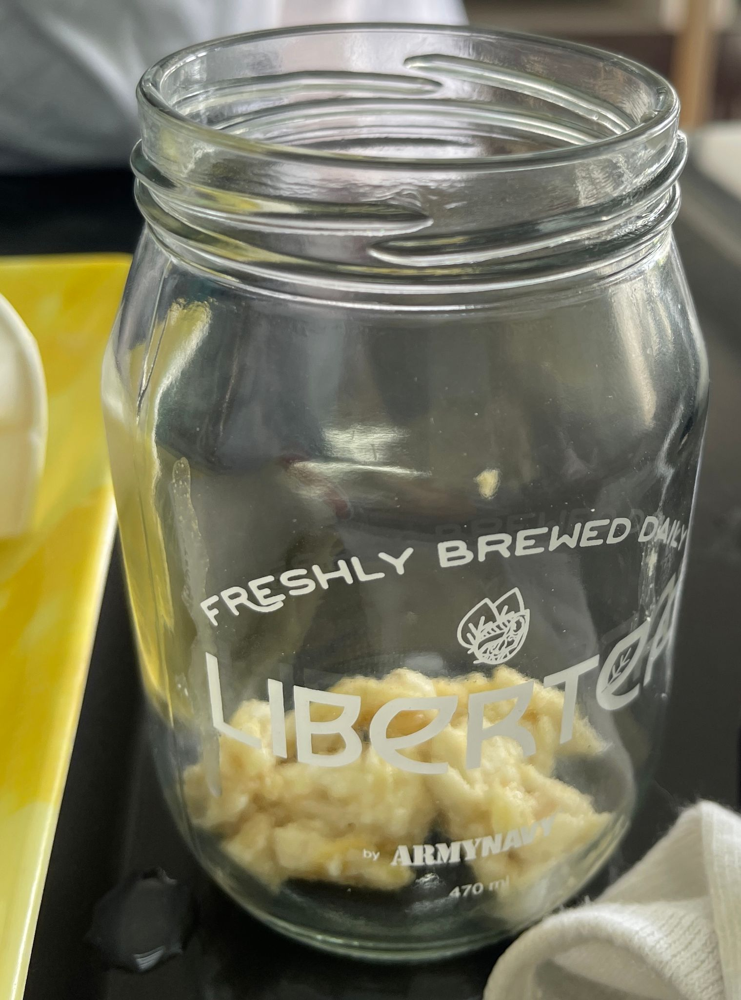

Empirical Science - Biology
Enter the fascinating realm of science with LAB! Explore the symphony of laboratory instruments as we set off on a thrilling investigative expedition. The Laboratory place is the right place to nurture the scientific spirit and conquer every question that boggles your mind. Now young stellar, are you ready to shine bright in the vast horizons of Science?
The laboratory page sets Stellar Horizon University’s scientific endeavor ablaze in every Stellars’ mind. The laboratory page is designated to serve as a panoramic overview of past experiments. These experiments constitute a vast amount of observations, inferences, and visual aids that are consolidated for the consumption of Stellars. The laboratory page provides empirical information, a glance at the systems that occur within the body, and fosters intellectual analysis throughout the course syllabus.
To start our scholarly odyssey, let’s embark on the fundamentals of the Digestive System! The digestive system is a highly-organized system that efficiently ingests, digests, absorbs, and eliminates food. Its components comprise of the oral cavity, pharynx, esophagus, stomach, small intestine, large intestine, rectum, and the anus. Each of these special organs performs a specific function that is inclined with the successful completion of the digestion of every individual. Correlating this matter, it is of utmost importance for a person to know the digestive tract. It raises awareness about what we eat and provides guidance on how to keep track of our diet, nutrition intake, consumption balance, and the like. Knowing the digestive system’s functions helps us to discern or choose specific dietary options that would in turn yield beneficial results to the body. We can control and be aware of the levels of nutrition expanse our body receives that align with the necessary optimal nutrition to enable effective growth and development, and revitalizing damaged tissues. Being conscious of consuming food simultaneously heightens our level of consciousness in terms of our health. Having the capacity to know what our food contains and how it reacts with our body enables us to have the capability to limit or increase particular food options to generate a boost to our immune system to competently combat lurking illnesses. This articulates the array of food options we can consider in the goal of making healthier, safer, and easier food planning. Taking another perspective, we can be knowledgeable of the food habits that we should omit to prevent health risks that may potentially endanger our well-being and deteriorate our body’s function in the overrun of things.
In this course, tons of experiments are about to transpire! One is the simulation of the digestive system. The experiment's goal is to emulate how the digestive system operates and how each organ corresponds to a purpose or function. The simplicity of the experiment commits to nurturing the minds of Stellars without bombarding them with the harsh and real intricacy of the process. It effectively conveys substantial and necessary information that is required to understand the foundational flow of the digestive system. The simulation guides Stellars into the process of delving into the workings of the digestive system while still delivering an entertaining aspect and kindles interest and curiosity. This enables high rates of engagement toward Stellars since the experiment is hands-on which synchronously increases the capacity to articulate laboratory skills and knowledge. The breaking down of the process of the digestive system allows the Stellars to truly understand the lesson, avoiding the complexities of the topic. In essence, the application of the experiment is a cultivating experience that inculcates curiosity and excitement. Information is not only imparted but is also memorable and creates a certain impact on the Stellars. The laboratory has transcended to become more than what meets the eye. It has become a realm of scientific voyage.
Experiment 1 - Digestive System
Subsection: Crushing stage
As the crackers and bananas were added to the zip lock bag, we observed that this activity emulated the act of placing food into the mouth. This emphasized the very first stage of the process of the digestive system, ingestion.
During the addition of water into the zip lock bag, we saw that it mimicked the introduction of saliva with the food. This demonstrates the initial phase of chemical digestion.
We saw in the earlier steps that the zip-lock bag represented the mouth. The prior ingredients being added symbolized the introduction of food into the mouth together with the addition of saliva. In later steps, the zip-lock bag also represented the stomach and small intestines, as the actions conducted in the stomach and small intestines occurred in the same place as the actions conducted in the mouth.
When the previously added ingredients were crushed together, we observed that this action mimicked the chewing of food in the mouth. This action represented the physical breakdown of large food particles of food in the mouth, emphasizing the first step of physical digestion. Additionally, we also observed that the crushing of food also symbolized the churning of food in the stomach. This action represented the further physical breakdown of food particles, showcasing the next step of physical digestion.
As the orange juice was added and mixed in, we observed that the action mimicked the secretion of gastric juices, bile, and other enzymes in the stomach and small intestine. This represented the final steps of chemical digestion.
As the process of digestion transpires, biomolecules such as carbohydrates, proteins, lipids, and nucleic acids are all being digested and broken down into smaller molecules that are to be absorbed by the small intestine.
Subsection: Transfer Stage
As the liquid flowed out of the stocking, we observed that this action represented the colon. The liquid flowing out represents the colon taking the water from the waste product and letting the body absorb it. This emphasizes the final steps of the digestion process as it prepares the waste product for its exit.
As the liquid flowing out of the stocking represented the colon taking away the water from the waste product, we realized that the water flowing out represented the water getting absorbed into the body. This represents the absorption of water by the body, the ending stages of the digestion process.
After we pushed out the water from the stocking, we observed that the contents left behind in the sock represents the feces. This step represents the final form of the waste product, the feces, which is ready to be expelled.
In this stage, the contents left behind in the sock are now being pushed out. As the contents were being pushed out, we realized that this action represented expelling the waste product through the anus. This is the final step of the digestion process.
Section 2: Simultation Of Absorption
The paper towel that underwent the maximum folding, precisely four times, exhibited the highest water absorption, absorbing a total of 8 mL of water. This observation suggests that the increased number of layers contributes to elevated levels of water absorption.
The tissue paper is alternatively the small intestine in this experiment exhibiting its function of absorbing. The folds and coils of the small intestine expand the surface area in which absorption occurs. Its structure is tailored to optimize the nutrient absorption. To articulate more on the projected folds and coils of the tissue, it imitates the inner linings of the small intestine composed of the vast expanse of villi, which exponentially enhances the surface area of enzyme activity. The structure ensures that the collaborative features of the small intestine efficaciously extract the essential nutrients from the digested food that in turn benefits the different aspects of the body’s needs.
Section 3 : Simulation of Bile Action
Bile serves as a digestive detergent crucial for the absorption and digestion of fats. Expanding on its function, it acts as an emulsifying agent, aiding in the breakdown of fats into smaller molecules. This process enhances the surface area available for digestive enzymes to perform their functions. In contrast to larger fat globules, the transformation into smaller droplets facilitates the more efficient extraction of absorbable components from triglycerides. All of these intricate processes are in credence with the bile.
Conclusion
The activity conducted about the digestive system simulation provided a practical and engaging experience, enhancing our understanding of the intricate processes involved in the inner workings of the digestive system. Using various materials to represent organs and enzymes made it possible to visualize the journey of food through the digestive tract, which in turn made it easier for students to understand the digestive system’s process. Additionally, knowledge gained about the digestive system has real life applications as it can be used to improve our diets.
Reflecting on this experience, we realized the value of interactive and immersive learning methods in grasping complex biological concepts. The hands-on nature of the activity made the information more memorable and applicable, promoting a deeper understanding of the digestive system. Additionally, the activity encouraged critical thinking as we considered the implications of each step conducted during the experiment.